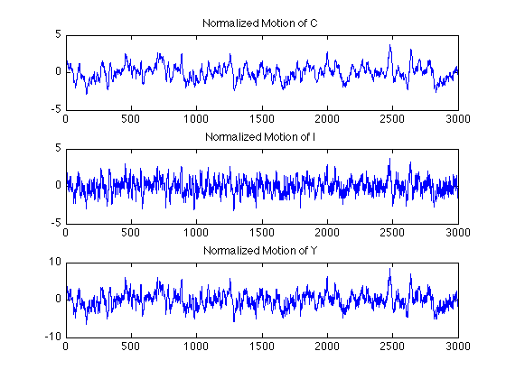

This script solves the stochastic growth model using the parameterized expectation algorithm
% Administrative commands clear all clc rand('state',1)
Initialize: set model's parameters
tic; % Start Clock counter alpha=0.27; % Production function beta =0.97; % Subjective discount factor delta =0.05; % Capital Depreciation gama = 1.5; rho = 0.9; % Persitence of productuvity stochastic component sigma = 0.0067; % Standard Deviation of epsilon
Characterize the steady state
zss = 0;
Kss = (alpha*beta/(1-beta*(1-delta)))^(1/(1-alpha)); % Capital stock at the steady state
Css = Kss^alpha - delta*Kss;
Step 1. Initialize
T=5000; % Time periods to simulate Tbar = 1999; % Time periods to discard lambda=1; % Smoothing parameter tol = 1e-6; % Tolerance level crit=1; % ||theta0-theta1|| stopping criterion Tpick = Tbar+1:T-1; % Tbar+1,...,T-1 T1pick = Tbar+2:T; % Tbar+2,...,T theta0 = [0.5 -0.7 -0.4 0.1 -0.1 -0.1]'; %{ %% % Calculate theta_0 e = randn(T,1); %kss=5.209578; hkk= 0.920484; hkz= 0.889531; %css= 1.301002; hck= 0.110444; hcz= 0.515802; z(1)=e(1); k(1)=Kss; c(1)=Css; for t=1:T-1 y(t+1,1) = beta*c(t)^(-gama)*(exp(z(t))*alpha*k(t)^(alpha-1)+1-delta); z(t+1,1) = rho*z(t) + sigma*e(t); %k(t+1,1)=Kss + hkk*k(t) + hkz*z(t) + 0.006622*e(t); k(t+1,1)=Kss+hkk*(k(t)-Kss)+hkz*(z(t)-zss); %c(t+1,1)=Css + hck*k(t) + hcz*z(t) + 0.003840*e(t); c(t+1,1)=Css+hck*(k(t)-Kss)+hcz*(z(t)-zss); end x = [ones(T,1) log(k) log(k).^2 z z.^2 z.*log(k)]; ybar=y(Tbar+1:T); xbar=x(Tbar+1:T,:); theta0 = xbar\log(ybar); %Following included do to a strange bug that makes theta0 values imaginary. while real(theta0)~=theta0 e = randn(T,1); %kss=5.209578; hkk= 0.920484; hkz= 0.889531; %css= 1.301002; hck= 0.110444; hcz= 0.515802; z(1)=e(1); k(1)=Kss; c(1)=Css; for t=1:T-1 y(t+1,1) = beta*c(t)^(-gama)*(exp(z(t))*alpha*k(t)^(alpha-1)+1-delta); z(t+1,1) = rho*z(t) + sigma*e(t); %k(t+1,1)=Kss + hkk*k(t) + hkz*z(t) + 0.006622*e(t); k(t+1,1)=Kss+hkk*(k(t)-Kss)+hkz*(z(t)-zss); %c(t+1,1)=Css + hck*k(t) + hcz*z(t) + 0.003840*e(t); c(t+1,1)=Css+hck*(k(t)-Kss)+hcz*(z(t)-zss); end x = [ones(T,1) log(k) log(k).^2 z z.^2 z.*log(k)]; ybar=y(Tbar+1:T); xbar=x(Tbar+1:T,:); theta0 = xbar\log(ybar); end fprintf('---------------------------------\n') fprintf(' Initial value for theta \n') fprintf('---------------------------------\n') for i=1:6 fprintf(' theta0(%g) = %6.3f \n',i,theta0(i)) end fprintf('---------------------------------\n') %}
Step 2: Generate a sequence for aggregate productivity
e = sigma*randn(T,1); z = zeros(T,1); z(1) = e(1); for i = 2:T; z(i)=rho*z(i-1)+e(i); end iter = 1; while crit>tol; % % Simulated path % k = zeros(T+1,1); % Kt lb = zeros(T,1); % Phi(K,z) X = zeros(T,length(theta0)); % X vector k(1) = Kss; for i = 1:T; X(i,:)= [1 log(k(i)) z(i) log(k(i))*log(k(i)) z(i)*z(i) log(k(i))*z(i)]; lb(i) = exp(X(i,:)*theta0); ct(i,1) = lb(i)^(-1/gama); k(i+1)=exp(z(i))*k(i)^alpha+(1-delta)*k(i)-ct(i); It=(k(i+1)-(1-delta)*k(i)); if It<0 k(i+1)=(1-delta)*k(i); It=(k(i+1)-(1-delta)*k(i)); end ct(i) = exp(z(i))*k(i)^alpha - It; %Calculates c_t from resource constraint end yt1 = beta*(ct(T1pick).^(-gama)).*(alpha*exp(z(T1pick)).*k(T1pick).^(alpha-1)+1-delta); thetat = X(Tpick,:)\log(yt1); theta1 = lambda*thetat+(1-lambda)*theta0; crit = norm(theta1-theta0); theta0 = theta1; disp(sprintf('Iteration # %2d \tCriterion: %g',iter,crit)) iter=iter+1; end; thetaopt = theta1; fprintf('---------------------------------\n') fprintf(' Final value for theta \n') fprintf('---------------------------------\n') for i=1:6 fprintf('theta(%g) = %6.3f \n',i,thetaopt(i)) end fprintf('\n') fprintf('x = [1 log(k) z log(k)*log(k) z^2 log(k)*z] \n') fprintf('---------------------------------\n') zbar=z(Tpick,1); kbar=k(Tpick,1); k1bar=k(T1pick,1); cbar=ct(Tpick,1); ibar=k(T1pick)-(1-delta)*k(Tpick); fprintf('Mean investment %1.5f \n',mean(ibar)); fprintf('Variance investment %1.5f \n',var(ibar)); fprintf('-----------------------------------------\n'); fprintf('Mean consumption %1.5f \n',mean(cbar)); fprintf('Variance consumption %1.5f \n',var(cbar)); fprintf('-----------------------------------------\n'); fprintf('Mean output %1.5f \n',mean(yt1)); fprintf('Variance output %1.5f \n',var(yt1)); sdY = sqrt(var(yt1)); sdI = sqrt(var(ibar)); sdC = sqrt(var(cbar)); fprintf('Ratio of the standard deviations for Output/Investment is:') sdI/sdY fprintf('Ratio of the standard deviations for Output/Consumption is:') sdC/sdY yt1l = lagmatrix(yt1,1); yt1l = yt1l(2:length(yt1)); yt1 = yt1(2:length(yt1)); for i=1:T ycheck(i,1)=exp(z(i))*k(i)^alpha; end ycheck = ycheck(Tpick); ycheckl = lagmatrix(ycheck,1); ycheckl = ycheckl(2:length(ycheck)); ycheck = ycheck(2:length(ycheck)); cbarl = lagmatrix(cbar,1); cbarl = cbarl(2:length(cbar)); cbar = cbar(2:length(cbar)); ibarl = lagmatrix(ibar,1); ibarl = ibarl(2:length(ibar)); ibar = ibar(2:length(ibar)); figure(1) subplot(3,1,1) plot((cbar-mean(cbar))/sdC) title('Normalized Motion of C') subplot(3,1,2) plot((ibar-mean(ibar))/sdI) title('Normalized Motion of I') subplot(3,1,3) plot((ycheck-mean(ycheck))/sdY) title('Normalized Motion of Y') yd=[ycheck cbar ibar]; corrs=corr(yd); corrs=corrs(1,:); fprintf('Correlation between Output-Output and Output-Investment and Output-Consumption, respectively are:') corrs fprintf('---------------------------------------------------\n') fprintf('Autocorrelation for Output is:') acorry=corrcoef(ycheck,ycheckl); acorry=acorry(2,1) fprintf('Autocorrelation for Investment is:') acorri=corrcoef(ibar,ibarl); acorri=acorri(2,1) fprintf('Autocorrelation for Consumption is:') acorrc=corrcoef(cbar,cbarl); acorrc=acorrc(2,1) fprintf('---------------------------------------------------\n')
Iteration # 1 Criterion: 0.432854
Iteration # 2 Criterion: 0.293554
Iteration # 3 Criterion: 0.210633
Iteration # 4 Criterion: 0.164114
Iteration # 5 Criterion: 0.132269
Iteration # 6 Criterion: 0.103849
Iteration # 7 Criterion: 0.0768311
Iteration # 8 Criterion: 0.0533443
Iteration # 9 Criterion: 0.0372783
Iteration # 10 Criterion: 0.0323565
Iteration # 11 Criterion: 0.0358332
Iteration # 12 Criterion: 0.0410728
Iteration # 13 Criterion: 0.0448585
Iteration # 14 Criterion: 0.0465003
Iteration # 15 Criterion: 0.0461907
Iteration # 16 Criterion: 0.0443704
Iteration # 17 Criterion: 0.0415042
Iteration # 18 Criterion: 0.0380004
Iteration # 19 Criterion: 0.034186
Iteration # 20 Criterion: 0.0303064
Iteration # 21 Criterion: 0.0265346
Iteration # 22 Criterion: 0.0229845
Iteration # 23 Criterion: 0.019724
Iteration # 24 Criterion: 0.0167864
Iteration # 25 Criterion: 0.0141803
Iteration # 26 Criterion: 0.0118981
Iteration # 27 Criterion: 0.00992102
Iteration # 28 Criterion: 0.00822444
Iteration # 29 Criterion: 0.00678061
Iteration # 30 Criterion: 0.00556106
Iteration # 31 Criterion: 0.00453801
Iteration # 32 Criterion: 0.00368532
Iteration # 33 Criterion: 0.00297898
Iteration # 34 Criterion: 0.00239737
Iteration # 35 Criterion: 0.00192131
Iteration # 36 Criterion: 0.00153398
Iteration # 37 Criterion: 0.00122078
Iteration # 38 Criterion: 0.000969182
Iteration # 39 Criterion: 0.000768448
Iteration # 40 Criterion: 0.000609482
Iteration # 41 Criterion: 0.000484585
Iteration # 42 Criterion: 0.000387265
Iteration # 43 Criterion: 0.000312049
Iteration # 44 Criterion: 0.000254319
Iteration # 45 Criterion: 0.000210191
Iteration # 46 Criterion: 0.000176424
Iteration # 47 Criterion: 0.000150371
Iteration # 48 Criterion: 0.000129939
Iteration # 49 Criterion: 0.00011354
Iteration # 50 Criterion: 0.00010002
Iteration # 51 Criterion: 8.8578e-05
Iteration # 52 Criterion: 7.86763e-05
Iteration # 53 Criterion: 6.99614e-05
Iteration # 54 Criterion: 6.22034e-05
Iteration # 55 Criterion: 5.52515e-05
Iteration # 56 Criterion: 4.90031e-05
Iteration # 57 Criterion: 4.33839e-05
Iteration # 58 Criterion: 3.83363e-05
Iteration # 59 Criterion: 3.38114e-05
Iteration # 60 Criterion: 2.97658e-05
Iteration # 61 Criterion: 2.61591e-05
Iteration # 62 Criterion: 2.29528e-05
Iteration # 63 Criterion: 2.01106e-05
Iteration # 64 Criterion: 1.75977e-05
Iteration # 65 Criterion: 1.53816e-05
Iteration # 66 Criterion: 1.34314e-05
Iteration # 67 Criterion: 1.17188e-05
Iteration # 68 Criterion: 1.02174e-05
Iteration # 69 Criterion: 8.90333e-06
Iteration # 70 Criterion: 7.75472e-06
Iteration # 71 Criterion: 6.75192e-06
Iteration # 72 Criterion: 5.87727e-06
Iteration # 73 Criterion: 5.11502e-06
Iteration # 74 Criterion: 4.45116e-06
Iteration # 75 Criterion: 3.8733e-06
Iteration # 76 Criterion: 3.37049e-06
Iteration # 77 Criterion: 2.93312e-06
Iteration # 78 Criterion: 2.55273e-06
Iteration # 79 Criterion: 2.22195e-06
Iteration # 80 Criterion: 1.93431e-06
Iteration # 81 Criterion: 1.68418e-06
Iteration # 82 Criterion: 1.46665e-06
Iteration # 83 Criterion: 1.27745e-06
Iteration # 84 Criterion: 1.11286e-06
Iteration # 85 Criterion: 9.69663e-07
---------------------------------
Final value for theta
---------------------------------
theta(1) = 1.572
theta(2) = -1.746
theta(3) = -0.676
theta(4) = 0.336
theta(5) = -1.045
theta(6) = 0.037
x = [1 log(k) z log(k)*log(k) z^2 log(k)*z]
---------------------------------
Mean investment 0.26071
Variance investment 0.00018
-----------------------------------------
Mean consumption 1.30187
Variance consumption 0.00032
-----------------------------------------
Mean output 0.67344
Variance output 0.00020
Ratio of the standard deviations for Output/Investment is:
ans =
0.9502
Ratio of the standard deviations for Output/Consumption is:
ans =
1.2727
Correlation between Output-Output and Output-Investment and Output-Consumption, respectively are:
corrs =
1.0000 0.9428 0.8949
---------------------------------------------------
Autocorrelation for Output is:
acorry =
0.9311
Autocorrelation for Investment is:
acorri =
0.8549
Autocorrelation for Consumption is:
acorrc =
0.9786
---------------------------------------------------
